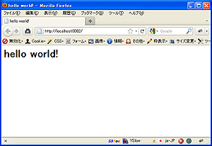

GAE用のプロジェクトを作成します。
新規プロジェクトの作成はnew_project_templateディレクトリをコピーして使用します。 ここでは engineapp という名前のプロジェクトを作成するので、コピーしたディレクトリの名前を変更します。
GAEの開発サーバを起動して、確認してみます。
$ cd engineapp
$ dev_appserver.py .
起動したアドレスをウェブブラウザで開いてみてください。 何も設定していない状態では 404 Not Found と表示されるはずです。
ノート
プロジェクトディレクトリのパスに日本語(マルチバイト文字)が含まれていると、テンプレートファイルの読み込み等でエラーになる可能性があります。
Django テンプレート を使ってページを表示してみましょう。
engineapp/apps ディレクトリ内に toppage.py というファイルを以下の内容で作成します。
from core import wsgi as core_wsgi
from core.generics import TemplatePageHandler
import config
# テンプレートファイルを使ってページを表示するクラスの定義
class TopPageHandler(TemplatePageHandler):
template_name = 'static/index.html'
# このトップページアプリケーションのエントリーポイント(WSGIアプリケーションを返す関数)
def application_factory():
# core_wsgi.WSGIApplicationでアプリケーションを作成して返します
application = core_wsgi.WSGIApplication([
(r'/', TopPageHandler),
], debug=config.DEBUG)
return application
ソースコード中で指定した static/index.html テンプレートファイルを作成します。
<html>
<head>
<title>hello world!</title>
</head>
<body>
<h1>hello world!</h1>
</body>
</html>
engineapp ディレクトリ内の config.py というファイルをエディタで開き、 APPS にマッチするURLとアプリケーションを返す関数名をタプルで追記します。
# installed apps
APPS = [
(r'^/_ah/warmup$', 'apps.warmup.handlers.application_factory'), # ウォームアップ用アプリケーション
(r'^/$', 'apps.toppage.application_factory'), # 追記
]
tokky.appengine.core では、 APPS リスト内のタプルを順に参照し、URLに最初にマッチしたアプリケーションファクトリーをロードして実行します。アプリケーションファクトリーはWSGIアプリケーションを返します。 アプリケーションファクトリーはURLにマッチしない限り、ロードされません。これは、スピンアップ時のパフォーマンス向上と、メモリ使用量の節約にも貢献しています。
これでトップページが有効になりました。 保存して、ウェブブラウザでもう一度開いてみると、 hello world! と表示されます。
